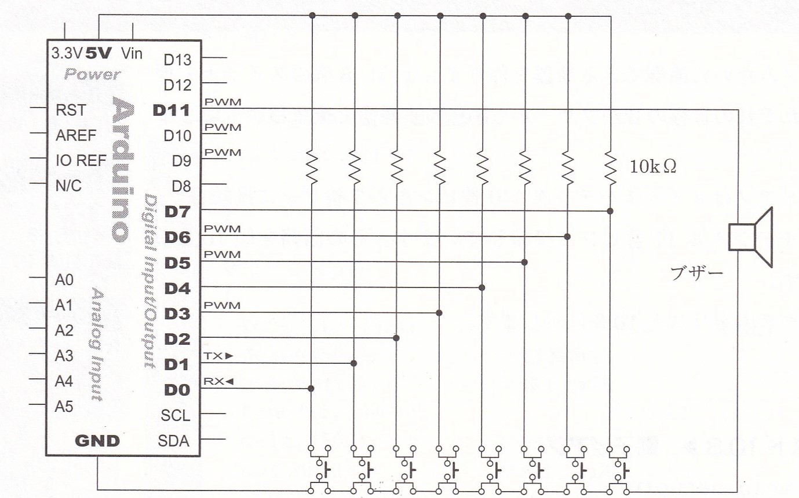
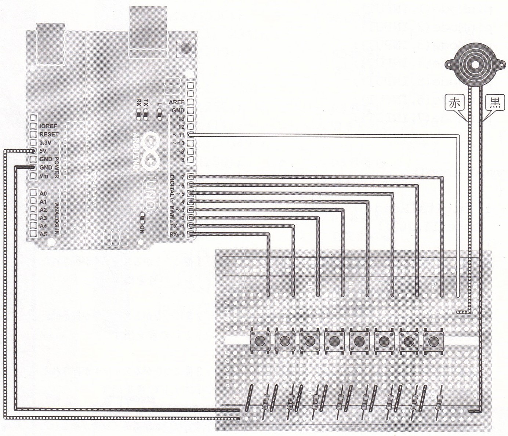
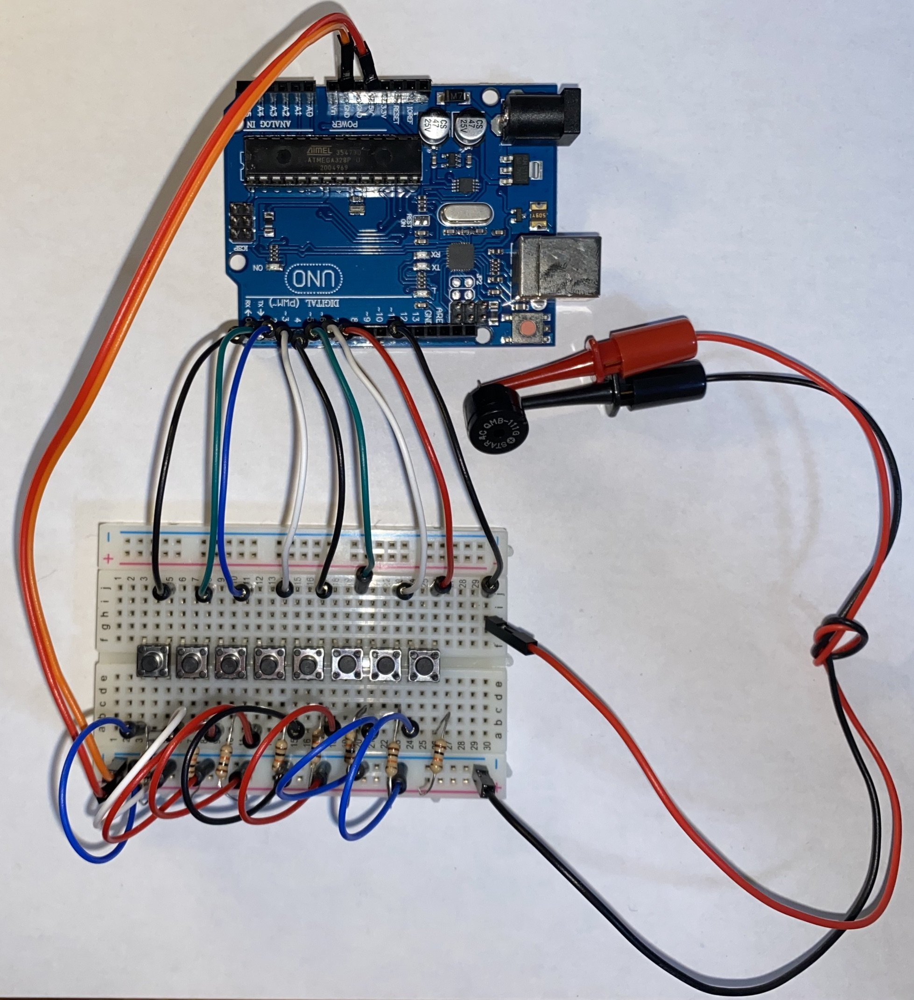

Arduinoで作る電子ピアノ
2020/10/20
今回は、Arduinoと圧電ブザーでピアノのように演奏できる楽器を作りました。8つの音を出すことができるので、音域を調整すれば様々な曲を演奏することができます！
以下の部品を使って作成しました。
- 圧電ブザー×1
- スイッチ×８
- 抵抗(10kΩ)×8
- Arduino
圧電ブザーは周波数によって音が変化する性質を持っています。具体的には、以下の表のように音が対応しています。
| 音 | ド | レ | ミ | ファ | ソ | ラ | シ | ド |
|---|---|---|---|---|---|---|---|---|
| 周波数[Hz] | 262 | 294 | 330 | 349 | 392 | 440 | 494 | 523 |
この性質を利用して電子ピアノを作るのですが、仕組みとしては「8個のスイッチを押すとそれぞれの音程の音がブザーから鳴って、離すと止まる」ようにします。
実際に回路では、スイッチをデジタル0番ピンから7番ピンに接続して、ブザーをデジタル11番ピンに接続しました。その回路を下の図に示します。


これを実際に配線したら写真のようになります
次に、プログラムを示します。以下のようなプログラムで電子ピアノを動かしました。
void setup()
{
pinMode(0,INPUT); //スイッチのための入力設定0番から7番
pinMode(1,INPUT);
pinMode(2,INPUT);
pinMode(3,INPUT);
pinMode(4,INPUT);
pinMode(5,INPUT);
pinMode(6,INPUT);
pinMode(7,INPUT);
}
void loop()
{
if(digitalRead(0)==LOW){ //0番につながるスイッチが押された
tone(11,262); //ドの音を出す
}
else if(digitalRead(1)==LOW){
tone(11,294);
}
else if(digitalRead(2)==LOW){
tone(11,330);
}
else if(digitalRead(3)==LOW){
tone(11,349);
}
else if(digitalRead(4)==LOW){
tone(11,392);
}
else if(digitalRead(5)==LOW){
tone(11,440);
}
else if(digitalRead(6)==LOW){
tone(11,494);
}
else if(digitalRead(7)==LOW){
tone(11,523);
}
else{ //スイッチが押されていない
noTone(11); //音を止める
}
delay(50); //0.05秒待つ
}
プログラムでは、まずsetup関数の中で8個の入力ピンと、一個の出力ピンを設定しています。それ以降では、スイッチが押されたらその音をだすようにしています。最後では、スイッチが押されていなければ音がでないようにしています。
実際にカエルの歌を演奏してみました。
周波数を調整して、ねごとのdropを演奏してみました。
このように、周波数を調整すればいろいろな曲が演奏できます！簡単につくれるので皆さんも作ってみてはいかがでしょうか。
参考文献：牧野浩二, たのしくできるArduino電子工作, 東京電機大学出版, pp91-93.